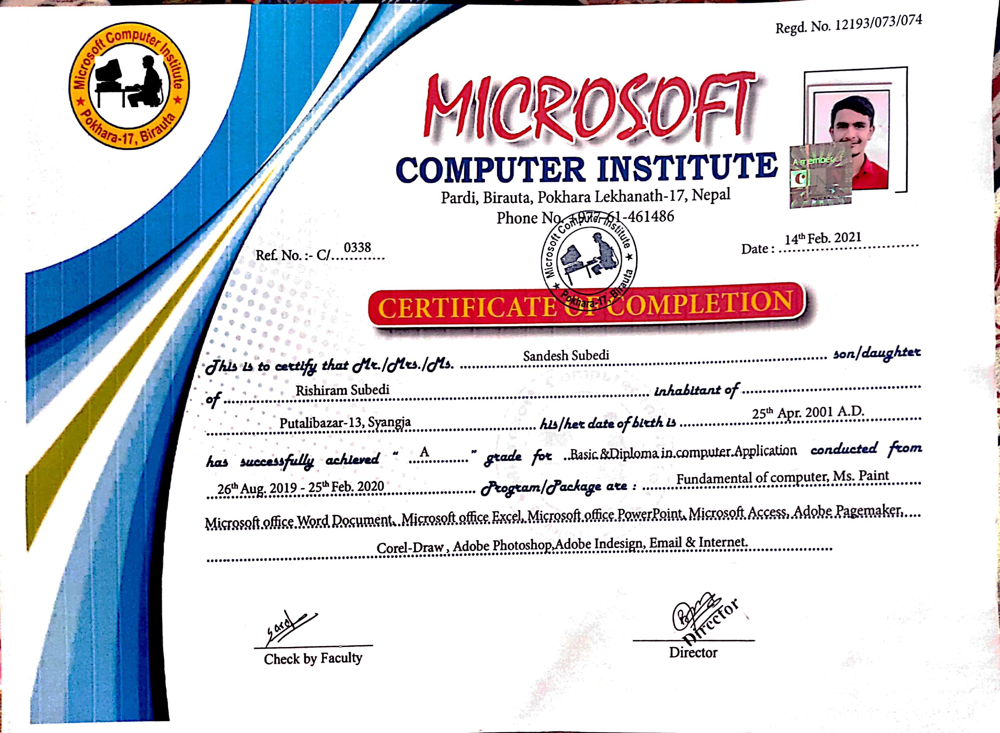
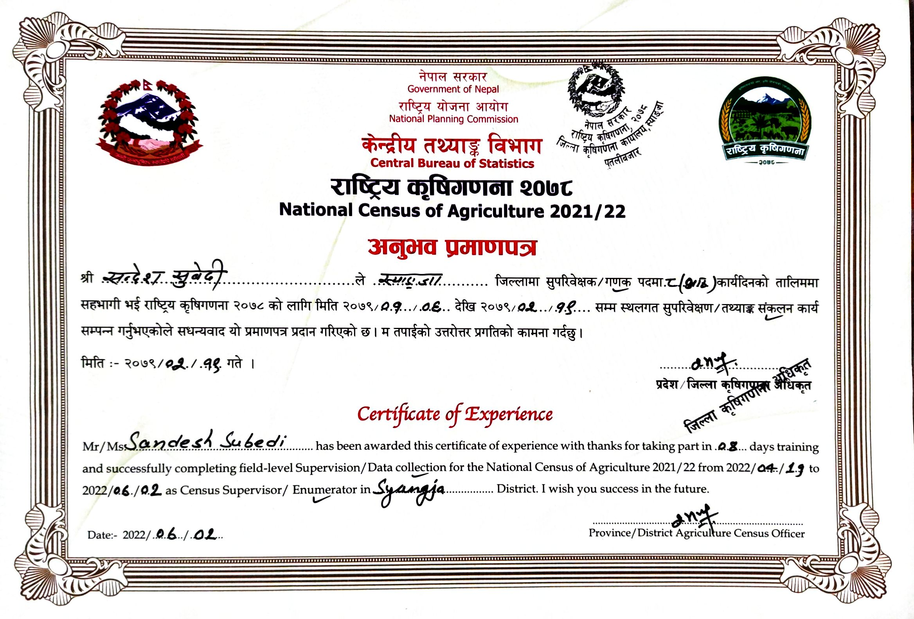
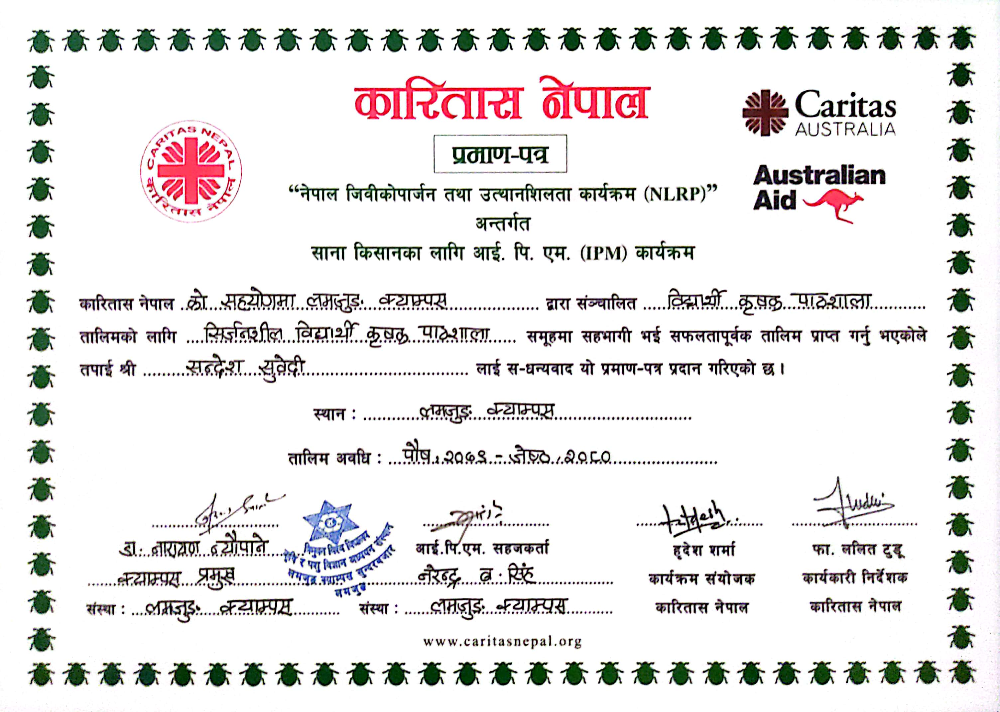
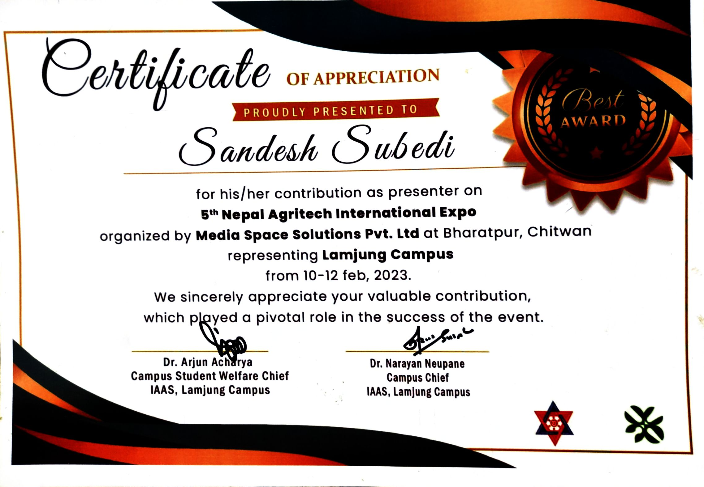

SANDESH SUBEDI
B.Sc. Agriculture Graduate | M.Sc. Horticulture Scholar
B.Sc. Agriculture Graduate | M.Sc. Horticulture Scholar
I am Sandesh Subedi, son of Rishiram Subedi and Sabitri Devi Subedi, born on 25 April 2001 (2058/01/12 B.S.) in Syangja, Nepal. Growing up in a rural agricultural community, I witnessed the dedication, hard work, and resilience of farmers in my village. Observing how agriculture shaped the livelihood of people around me inspired me to develop a strong interest in farming, agricultural development, and innovative solutions for the agricultural sector.
My academic and professional interests focus on agriculture, artificial intelligence (AI), digital agriculture, and technology-driven innovation. I am particularly interested in the application of Computer Vision, Machine Learning, and Image Analysis in areas such as crop monitoring, disease detection, and yield estimation.






Caritas Nepal, 2023

Youth for Sustainable Agriculture, 2022

Youth for Sustainable Agriculture, 2022

Exhibitor - Media Space Solutions, 2023

Volunteering for social and environmental justice, 2024